Git
Contents
Git#
Table of Contents
Locally Grown#
Your set of files that you work on locally is sometimes called a working directory, working copy, working tree or local checkout.
A tree is the directory structure and contents of your files, or a snapshot of them from a particular point in time.
Anatomy of a Repository#
We’ve already talked about how a repository is the version control data for your codebase. Now we’ll go into a little more detail about what kind of information git stores and what that means for how to use it.
Every repository contains:
object database – the history of all commits and the relationships between them.
one or more branches – a branch is a container that has a name and stores set of commits. For now all you need to know is that every repository is created with a default branch named master that all of your commits are being stored on.
HEAD – a reference to the current commit on the current branch. A reference is like a bookmark to a commit. Since we’re not doing anything fancy,
HEADwill point to the most recent commit on themasterbranch for the foreseeable future.the tree – a snapshot of your files at the time of the
HEADcommit.the index – a snapshot of your files at the time of the
HEADcommit plus the changes you’ve staged for commit.
Conceptually, your repository looks a little something like this:
![' A PlantUML diagram showing the components of a local repository. ' allowmixing left to right direction skinparam classattributeiconsize 0 skinparam pageMargin 10 hide class circle hide empty members title Local Repository !startsub REPO_LOCAL folder "git local" as gitlocal { card "**HEAD**" <<ref>> as head card "**master**" <<branch>> as master frame "**object db**" as objectdb { map "**commits**" as commits { c331b4d => gitign... 6a338d8 => format... 02c7a7a => minor ... 382421e => finish... fa69673 => clean ... 92241db => reorga... fb090a5 => add py... } } frame "**index**" as index { map "**c331b4d**" as tree <<tree>> { 598bec57 => .replit 73bb444b => pypet.py 26c39fd5 => readme.md } class "**staging**" as staging<added> { +LICENSE } } } folder "**files**" as files { class "** working**\n **tree**" as working<+changes> <<contents>> { .gitignore bin/ LICENSE pypet.py readme.md } 'le : down 'do : right head -do-> master master -do-o commits::c331b4d commits::c331b4d o-do-||> tree tree -le[hidden]- staging tree -do[hidden]- working !endsub REPO_LOCAL](../_images/kroki-d614f46201b47b040abf03be9486ad1162344005.svg)
Mo’ repos, mo’ versions#
But wait, there’s more!
There are actually at least two repositories of your files.
The one on Repl.it. Even though it is not actually on your physical computer, it is where you’re editing the files so we’ll refer to it as a local repository.
The remote repository on Github.
Eventually you may also have an actually-local local repository on your computer.
In Which I Digress#
Git is a special kind of version control system called Distributed version control. As opposed to Centralized Version Control Systems that have one central repository that all other repositories were required to communicate with in order to commit changes. In git on the other hand, every repo is self- contained–that means anyone who has a local checkout of a repo can make commits and look up changes to their hearts content without having to consult any other repo.
Additionally, every repo can send changes to or receive changes from any other compatible repo.
Imagine we all worked on the same codebase. The difference between the two systems would be something like this:
![flowchart LR subgraph Version Control subgraph Centeralized direction TB central[Central Repo] <--> a1[Alissa] & j1[Jayson] & s1[Sean] end subgraph Decentralized direction TB Remote & Alissa <--> Jayson & Sean end end](../_images/kroki-ef00e4974cafc4ef3f96224ca3562d352453e006.svg)
Even though something like that is technically possible, in practice we’ll use Github as a hub to sync between different repos.
The way I use it looks something like this:
Remote Control#
When you have a remote repository that you want to send changes to, it is sometimes refereed to as an upstream repo or just a remote repository. For us, that will be the Github repo.
Git gives our first remote repository the default name of origin. A special kind of branch is also created called a tracking branch. Its job is to store a copy of the object database for the corresponding branch from the remote repo.
So it turns out, our repo actually looks more like this.
+------------------------+ +----------------------+
| object-db | | index |
| +-------------------+ | +----------------------+
HEAD ---> master ------+->| c331b4d gitign...------------+----------------+ |
(ref) (branch) | | 6a338d8 Format... | | | | c331b4d tree | |
| | 02c7a7a Minor ... | | | +----------------+ |
| | 382421e Finish... | | | | pypet.py | |
| | fa69673 Clean ... | | | | README.md | |
| | 92241db Reorga... | | | | .replit | |
| | fb090a5 Add Py... | | | | ... | |
| | ... | | | +----------------+ |
| +-------------------+ | | |
| | | +----------------+ |
| | | | staging | |
| | | +----------------+ |
| | | | +LICENCE.md | |
| | | | +bin/ | |
| | | | ... | |
| | | +----------------+ |
| | +----------------------+
| +-------------------+ |
remotes/origin/head ---+->| 112e375 Add ca..------------+-----------------+
(tracking branch) | | 6a338d8 Format... | | | 112e375 tree |
| | 02c7a7a Minor ... | | +----------------+
| | 382421e Finish... | | | pypet.py |
| | fa69673 Clean ... | | | docs/ |
| | 92241db Reorga... | | | .replit |
| | fb090a5 Add Py... | | | ... |
| | ... | | +----------------+
| +-------------------+ |
+------------------------+
Let’s talk commitment#
It’s time to zoom in on commits. A commit is a set of changes recorded in git. Sometimes also called a revision or a change log. Every commit has:
a SHA or hash – a 40-character unique identifier that points to the rest of the data related to the commit. Basically, a commit ID. Here’s an example:
d16085b3b913e5bc5e351c0a7461051e9973629a
a patch – the file detailing the exact changes that were made in a format that git and other programs understand. It’s very similar to the output of
git diff.the tree – a snapshot of your files at the time of the commit.
Historical data detailing the ancestry of the commit.
Metadata like the date, author, and commit message.
Altered States#
Now that you are a little more familiar with the pieces and how they fit together, let’s talk about what that means.
There are now potentially many different versions of your files that may exist at any given time:
your working directory
the index
head
HEAD, the refits tree
its object-database
for the master branch
for the tracking branch to remotes/origin/master
origin
HEADits tree
its
object-databasefor the master branch
Local States#
Here are the possible states of local file changes.
+------------------------------------------+----------------+-----------------------------------------+
| status | where | description |
+------------------------------------------+----------------+-----------------------------------------+
| untracked | | working-tree | a new file |
| tracked | modified | working-tree | changes to a file |
| tracked | staged | index | changes queued up for the next commit |
| tracked | committed/unmodified | head | changes git has recorded |
+--------------+---------------------------+----------------+-----------------------------------------+
Note: It is possible for a file to be both staged AND modified at the same
time. This can happen if you stage a commit, then make additional changes to
the same file. It is actually the chunks of changes that are tracked, rather
than the file as a whole.
Relative-to-Remote States#
Here are the possible states of the local repository relative to the remote repository.
+---------------+---------------------------------------------------------------+
| status | description |
+---------------+---------------------------------------------------------------+
| up to date | local and remote are the same |
| behind | remote changes not in local |
| ahead | local changes not in remote |
| diverged | local changes not in remote AND remote changes not in local |
+---------------+---------------------------------------------------------------+
State Changes#
And finally, here is the workflow and how states change for each action.
![' ' PlantUML Sequence diagram showing which parts of a repo are effected using ' various git commands. ' ' Setup ' ========================================================================== <style> arrow { LineColor purple LineThickness 1.5 } note { BackgroundColor white } </style> skinparam SequenceDividerFontStyle normal skinparam SequenceDividerBorderColor MidnightBlue skinparam SequenceLifelineBackgroundColor LightBlue skinparam SequenceLifelineBorderColor purple ' Participants ' ========================================================================== box Local #MintCream participant "**Working Tree**" as tree <<files>> participant "**Index**" as index <<staged>> participant "**HEAD**" as lhead <<ref>> participant "**DB**" as ldb <<history>> end box box Remote #GhostWhite participant "**DB**" as rdb <<history>> participant "**HEAD**" as rhead <<ref>> end box ' Messages ' ========================================================================== == ""git clone"" == rnote across: download new repo rhead --> ldb ++ : ldb --> lhead --++ : lhead --> index --++ : index -->o tree -- : ||| == ""git add"" == rnote across: add changes to index tree -->o index : hnote left : untracked hnote right : staged ||| == ""git commit -a"" == rnote across: add and store commit tree --> index ++ : hnote left : untracked index --> lhead --++ : lhead -->o ldb -- : hnote right : committed ||| == ""git commit"" == rnote across: store commit index --> lhead ++ : hnote left : staged lhead -->o ldb -- : hnote right : committed ||| == ""git fetch"" == rnote across: download commit data rdb -->o ldb : ||| == ""git pull"" == rnote across: merge content into local from remote rhead --> ldb ++ : hnote right : behind/diverged ldb --> lhead --++ : lhead -->o tree -- : hnote left : up to date ||| == ""git push"" == rnote across: merge content from local to remote lhead --> rdb ++ : hnote left : ahead/diverged rdb -->o rhead -- : hnote right : up to date |||](../_images/kroki-b5152868b6640f616426144020dfa3b74b716333.svg)
Fig. 1 Git Sequence Diagram#
Glossary#
Version Control#
- branch#
A container that has a name and stores set of commits. Every repository is created with a default branch named master.
- codebase#
A set source code files that make up a software system, application, component or project.
- commit#
- revision#
- change log#
A set of changes recorded in version control.
- distributed version control#
As opposed to centralized version control systems that have one central repository that all other repositories were required to communicate with in order to commit changes. In distributed version control, every repo is self contained and any repo send changes to or receive changes from any other compatible repository.
- HEAD#
A reference to the current commit on the current branch. A reference is like a bookmark to a commit.
- index#
A snapshot of your files at the time of the
HEADcommit plus the changes you’ve staged for commit.- master#
- main#
The default branch. Until recently the default branch was named master, but recently there has been a shift to naming the default branch main.
- object database#
The history of all commits and the relationships between them.
- origin#
The default remote repository.
- patch#
The file detailing the exact changes between two versions in a structured format that git and other programs understand. It’s very similar to the output of
git diff.- reference#
A pointer to a specific commit.
- remote repository#
- upstream repo#
A repository that you send changes to.
- repository#
- repo#
The container for version-control information for a set of files.
- SHA#
- hash#
A 40-character unique identifier that points to a the rest of the data related to the commit. Basically, a commit ID. Here’s an example:
d16085b3b913e5bc5e351c0a7461051e9973629a- tree#
- version control#
- source control#
- revision control#
A method for keeping track of and managing changes to a set of files.
- version control system#
- VCS#
- revision control system#
- source control management system#
- SCM#
A tool or set of tools for version control. The most popular today is Git, but some other examples include Mercurial, Subversion, CVS and Perforce.